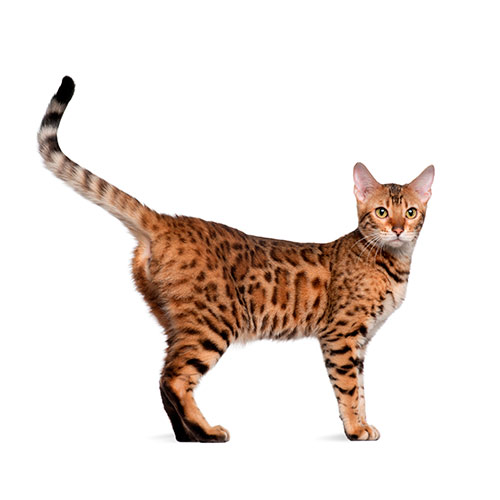

KOT BENGALSKI
|

KOT BENGALSKI |
| Wygląd | Kot bengalski jest kotem rozmiarów średnio-dużych, samce tego gatunku ważą zazwyczaj od 5. do 6. kilo, czasami do 9. kilogramów w przypadku kotów kastrowanych. Samice ważą mniej, w granicach 3-4 kilogramów, gdy osiągają pełną dojrzałość. Tak jak ich dzicy kuzyni, udomowione koty bengalskie posiadają bardzo umięśnione, długie ciało, co stanowi jedną z charakterystycznych cech tej rasy. |
|---|---|
| Charakter | Cechuje je nietypowe uwielbienie dla wody i często może się zdarzyć, iż wskoczą do wanny za swoim właścicielem. Chętnie używają przednich łap do chwytania i przenoszenia przedmiotów. Swoją zadziwiającą inteligencję prezentują podczas rytuału polowania na zabawki. Uwielbiają się wspinać, podobnie jak ich przodkowie. Nie są lękliwe. |